Network Layer
Functions: 1. Routing (control plane) 2. Fowarding (data plane)
Architectures
- Traditional network: integrated control plane + data plane
- Software defined network (SDN): separated control plane + data plane
Router Architecture
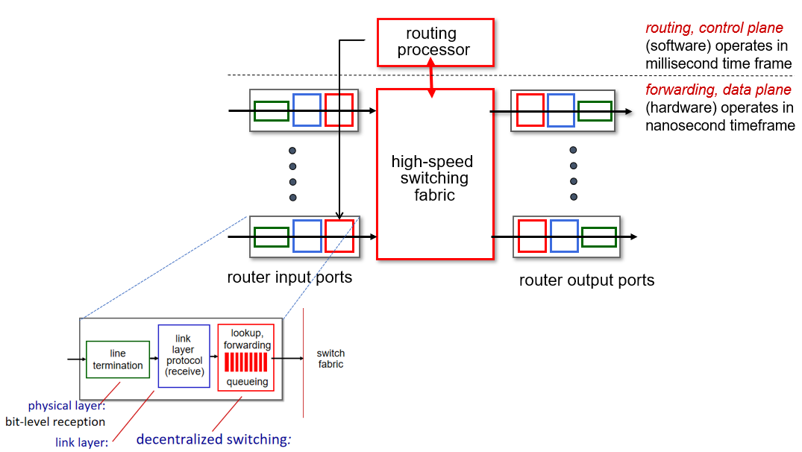
Forwarding Table(最长匹配原则)
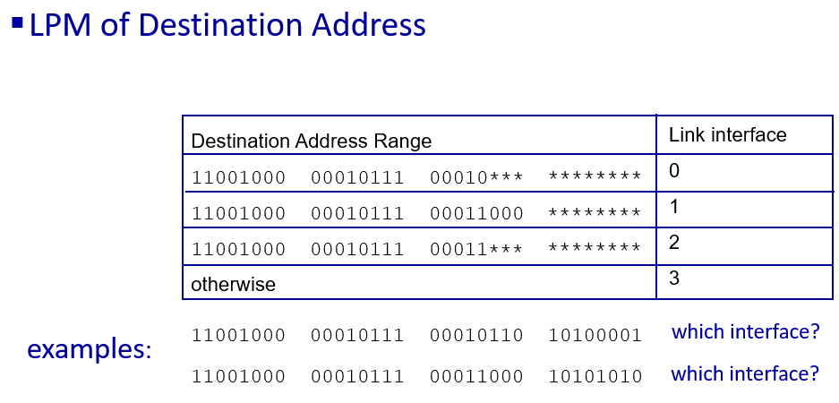
Switching Fabrics
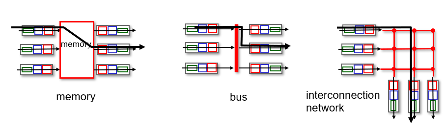
Switching via memory： the overall forwarding throughput (the total rate at which packets are transferred from input ports to output ports) must be less than B/2. Note also that two packets cannot be forwarded at the same time, even if they have different destination ports, since only one memory read/write can be done at a time over the shared system bus.
Switching via a bus： All output ports receive the packet, but only the port that matches the label will keep the packet.
Switching via an interconnection network：
Queuing
Input port queuing
Condition: switch fabric slower than input ports combined
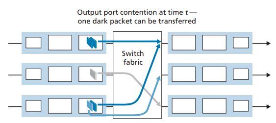
HOL blocking problem(线路前部堵塞问题)：a queued packet in an input queue must wait for transfer through the fabric (even though its output port is free) because it is blocked by another packet at the head of the line.
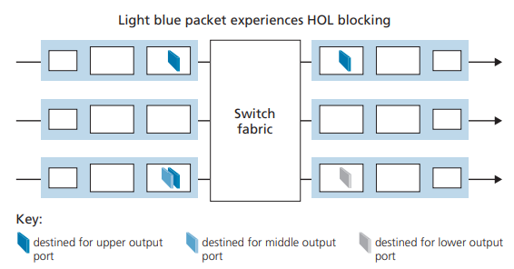
Output port queuing
Condition: when datagrams arrive from fabric faster than link transmission rate
How much buffering?
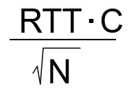
RTT: 平均往返时延
C：链路容量
N：端口数
Scheduling
FCFS (FIFO)：先进先出
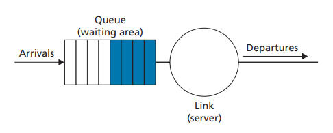
Priority scheduling
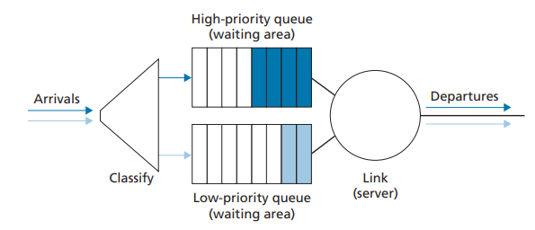
Round Robin (RR) scheduling
packets are sorted into classes as with priority queuing. However, rather than there being a strict service priority among classes, a round robin scheduler alternates service among the classes
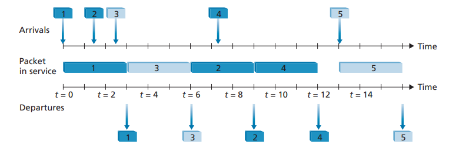
Weighted Fair Queuing (WFQ)
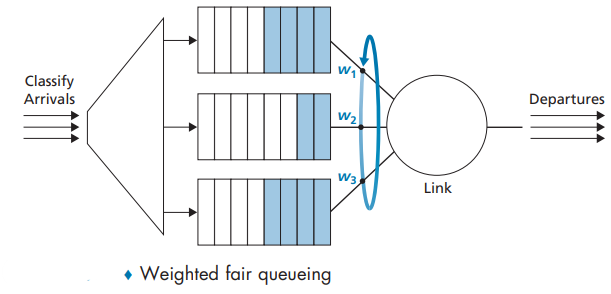
IP Datagram format
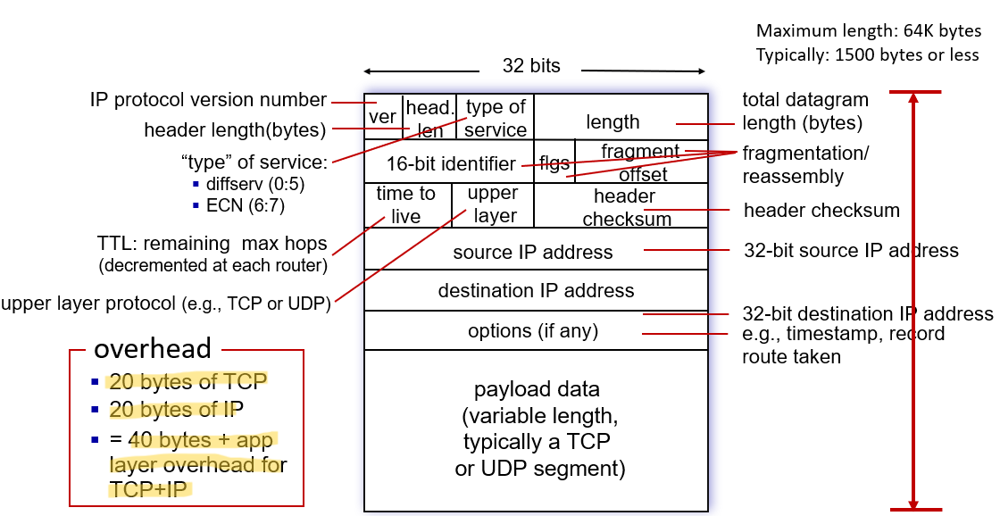
Subnets
device interfaces that can physically reach each other without passing through an intervening router
IP addresses have structure:
- subnet part: devices in same subnet have common high order bits
- host part: remaining low order bits
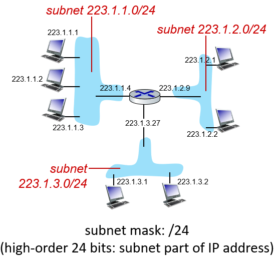
IP addressing: CIDR
CIDR: Classless InterDomain Routing (pronounced “cider”)
- subnet portion of address of arbitrary length
- format: a.b.c.d/x, where x is #bits in subnet portion of address
Dynamic Host Configuration Protocol (DHCP)
Function
DHCP allows a host to obtain (be allocated) an IP address automatically.
Process

DHCP server: typically co-located in router
Network Address Translation (NAT)
Motivation：
- just one IP address needed from provider ISP for all devices
- can change addresses of host in local network without notifying outside worl
- can change ISP without changing addresses of devices in local network
- security: devices inside local net not directly addressable, visible by outside world
Principle
all devices in local network share just one IPv4 address as far as outside world is concerned
Process

Generalized Forwarding in SDN
Match + action
- match: pattern values in packet header fields
- actions: for matched packet: drop, forward, modify, matched packet or send matched packet to controller

OpenFlow

Routing Protocols
Link State (LS)：Dijkstra algorithm
1 Initialization:
2 N' = {u} /* compute least cost path from u to all other nodes */
3 for all nodes v
4 if v adjacent to u /* u initially knows direct-path-cost only to direct neighbors */
5 then D(v) = cu,v /* but may not be minimum cost!
6 else D(v) = ∞
7
8 Loop
9 find w not in N' such that D(w) is a minimum
10 add w to N'
11 update D(v) for all v adjacent to w and not in N' :
12 D(v) = min ( D(v), D(w) + cw,v )
13 until all nodes in N'
需要输入一个source 和对应的表
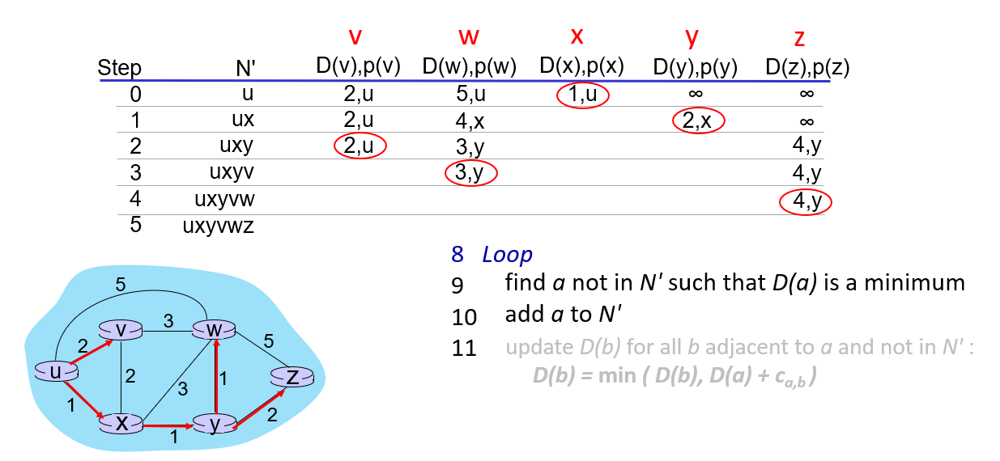
shortcoming: 会出现线路拥堵程度的震荡
Distance Vector (DV)：Bellman-Ford algorithm
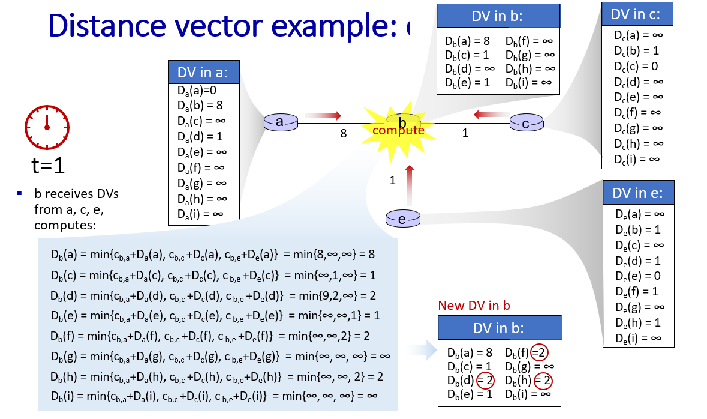
cons: "好事传播速度快，坏事传
Three classes of OpenFlow messages
- controller-to-switch
- switch-to-controller
- symmetric (misc.)